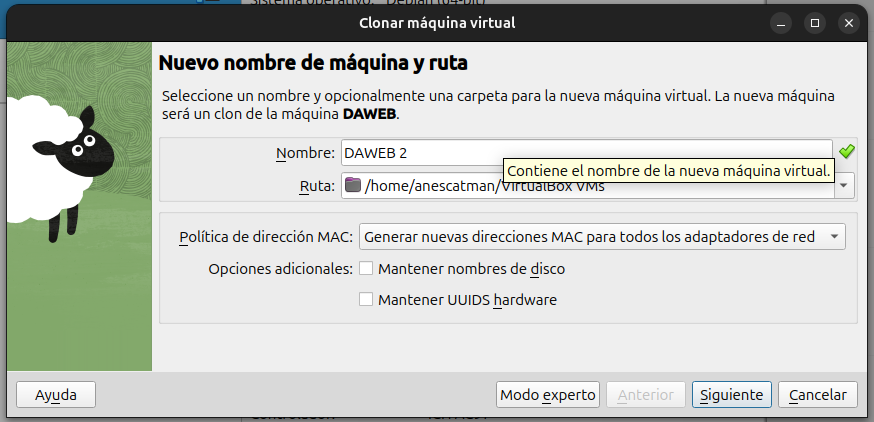
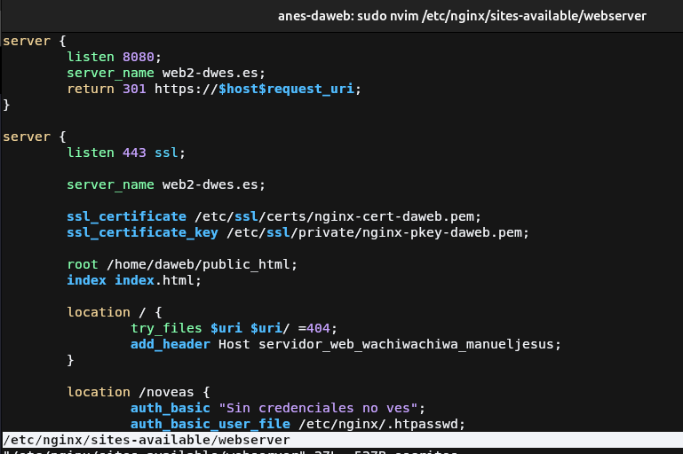
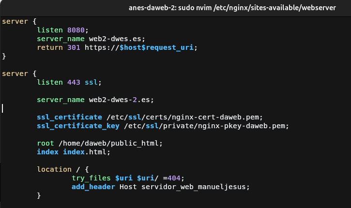
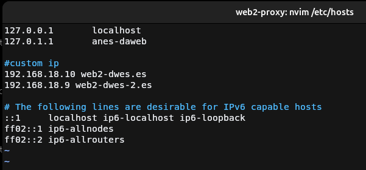
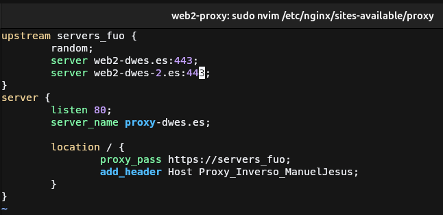
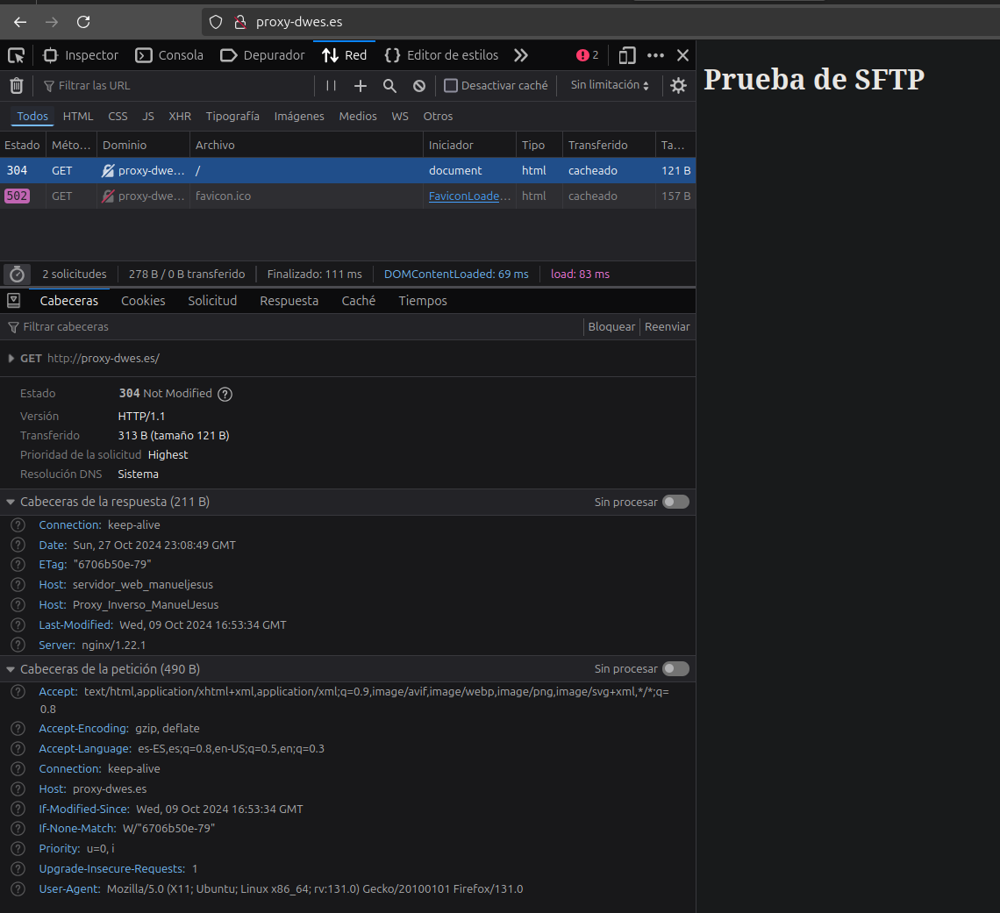
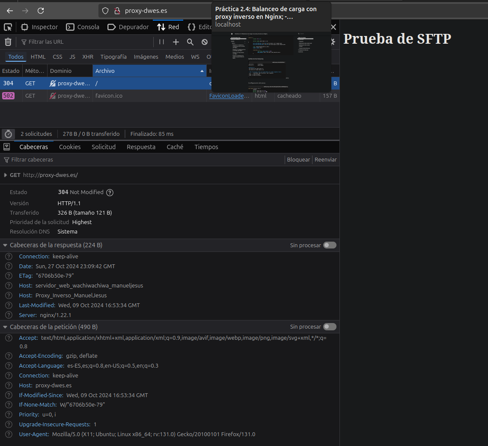
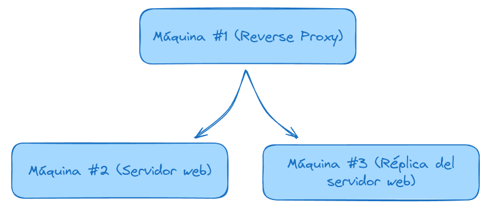

Práctica 2.4: Balanceo de carga con proxy inverso en Nginx
Introducción
Clonación

Para comenzar esta práctica debemos de clonar la máquina virtual del servidor web, ya que necesitaremos una replica del servidor para que la práctica sea lo más fiel a la realidad posible.
Un balanceo de carga tiene como objetivo repartir la carga del tráfico web entre servidores réplica para así agilizar el tráfico y que gane robustez ya que en caso de que caiga una réplica, siempre habrá otra proporcionando servicio.
Modificación del servidor web

Este servidor no es necesario hacer ningún cambio pero en mi caso le voy a modificar la cabecera para que sea diferente a la de la práctica anterior.
Modificación del servidor clonado

Para que no haga conflicto los nombres de dominio deberemos de cambiar este en algún servidor, en mi caso será
el clonado para dejar el otro casi como en la práctica anterior. Simplemente a la directiva server_name se le
cambia por la nueva dirección y se guarda.
Para finalizar reiniciamos Nginx con
Cambio de host del proxy

Ahora en el servidor del proxy debemos añadir la nueva entrada con el nuevo dominio para que Nginx lo detecte.
Para finalizar reiniciamos Nginx con
Configuración del proxy

Ahora viene lo importante, para que Nginx actue como un balanceador de carga debemos de agrupar los servidores a
los que Nginx enviará las peticiones, esto es posible mediante el bloque upstream <nombre-grupo> {...}. En este
bloque es donde se añadirán los servidores a los que Nginx redirigirá las peticiones. Se hace mediante la directiva
server <hostname|ip>:<puerto> como se ve en la captura de pantalla y podemos comprobar que tenemos también la
directiva random, que se usa para que rediriga la peticion a un servidor aleatorio de los añadidos en el bloque.
El último cambio a realizar es cambiar la directiva proxy_pass y cambiar la dirección al nombre elegido en el bloque
upstream.
Para finalizar reiniciamos Nginx con
Demostración

Desactivamos con sudo systemctl stop nginx el servidor 1 (el origen) para comprobar que envía la petición al servidor clonado
ya que la cabecera que envía pertenece a este servidor

Desactivamos con sudo systemctl stop nginx el servidor 2 (el clonado) para comprobar que envía la petición al servidor
web de origen al que le pusismos de cabecera Host servidor_web_wachiwachiwa_manueljesus.
Cuestiones
Cuestión 1
Enunciado
Busca información de qué otros métodos de balanceo se pueden aplicar con Nginx y describe al menos 3 de ellos.
Los métodos de balanceo que he encontrado son:
least_conn: Este método de balanceo distribuirá la carga de forma que las nuevas peticiones irán siempre dirigidas a los servidores con menos conexiones activas.ip_hash: Este método de balanceo como dice su nombre, hace un hash de los 3 primeros octetos de la IPV4 o la IPV6 completa del cliente y según la IP, la dirige a un servidor. Este servidor será siempre el que resuelva las peticiones del mismo cliente a no ser que no esté disponible.least_time: Este método distribuye la carga tomando en cuenta el número de conexiones activas y además el tiempo de respuesta del servidor, priorizando los que menos conexiones y tiempo de respuesta tengan.
Cuestión 2
Enunciado
Si quiero añadir 2 servidores web más al balanceo de carga, describe detalladamente qué configuración habría que añadir y dónde.
Si contamos que el servidor que añadimos ya está configurado previamente ya que sería una réplica del servidor
al que queremos dar mas robustez o escalabilidad, únicamente habría que tocar el archivo de configuración del
proxy y en el bloque upstream correspondiente añadir dos nuevas directivas:
upstream servicio-reloco {
...;
server <host_servidor_1>:<puerto_servidor_1>;
server <host_servidor_2>:<puerto_servidor_2>;
}
Cuestión 3
Enunciado
Describe todos los pasos que deberíamos seguir y configurar para realizar el balanceo de carga con una de las webs de prácticas anteriores.
Indicad la configuración de todas las máquinas (webservers, proxy...) y de sus servicios
Para realizar un balanceo de carga utilizando una web de las prácticas anteriores se deberá primeramente de preparar 3 máquinas virtuales mínimo con NGINX. 
La primera máquina es la que hará de proxy la cual redirigirá las peticiones a las máquina que mejor venga en ese momento, empecemos configurándolas en orden.
Configuración del servidor web
Debemos de crear un archivo de configuración en el directorio /etc/nginx/sits-available y que en mi caso
se llamará webchuli y su contenido será el siguiente:
server {
listen 80;
server_name web-chuli-rpl1.es;
root /home/webchuli/public_html;
index index.html;
location / {
try_files $uri $uri/ =404;
}
}
Tras crear este archivo, se deberá de crear el respectivo enlace simbólico blando en el directorio /etc/nginx/sites-enabled con el siguiente comando:
Configuración del servidor réplica
En la configuración de la replica, al ser como dice su nombre, una réplica del servidor web ya estarían
realizados los pasos anteriores solo faltaría cambiar el server_name para que no haga conflicto con el
server_name de la máquina original.
server {
listen 80;
server_name web-chuli-rpl2.es;
root /home/webchuli/public_html;
index index.html;
location / {
try_files $uri $uri/ =404;
}
}
Configuración del proxy
Para configurar la máquina NGINX como un proxy inverso, lo haremos tal y como se ha descrito en toda la práctica.
Primero debemos de crear un bloque upstream en el que definiremos los servidores que hemos configurado anteriormente
y el método de balanceo de carga. El elegido será least_time que tal como se explicó anteriormente redirigirá las
peticiones al servidor con menor latencia y con menor carga de trabajo.
Tras esto configuramos el servidor proxy, que funcionará bajo la URL de web-muy-chuli.es o www.web-muy-chuli.es
en y redireccionará las peticiones al grupo de servidores web_chuli definidos anteriormente gracias a la directiva
proxy_pass.
upstream web_chuli {
least_time;
server web-chuli-rpl1.es:80;
server web-chuli-rpl2.es:80;
}
server {
listen 80;
server_name web-muy-chuli.es www.web-muy-chuli.es;
location / {
proxy_pass http://web_chuli;
}
}
Por último, ya que no usamos ningún DNS para resolver los nombres, debemos de añadir al archivo hosts del proxy las IP de las máquinas virtuales que usemos en los servidores web, quedando de la siguiente forma siguiendo los nombres definidos:
Tras realizar las configuraciones indicadas, se deberá de crear el respectivo enlace simbólico blando en el directorio /etc/nginx/sites-enabled con el siguiente comando:
Warning
Se debe reiniciar después de añadir las IP al archivo hosts ya que nginx crashearía debido a que no encuentra los servidores indicados en el upstream
Una vez realizado esto ya solo queda añadir en el archivo hosts de tu sistema operativo la IP de tu proxy para probarlo tal y como se hizo al momento de configurar la máquina proxy:
- En windows:
- En Linux o Mac: